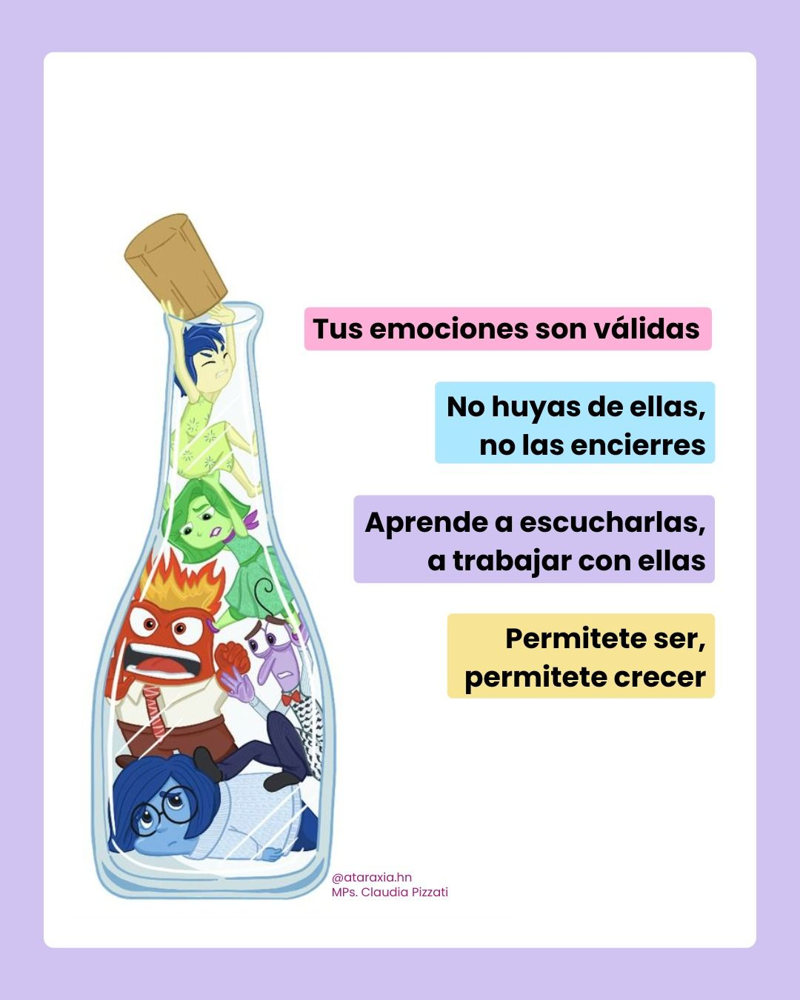
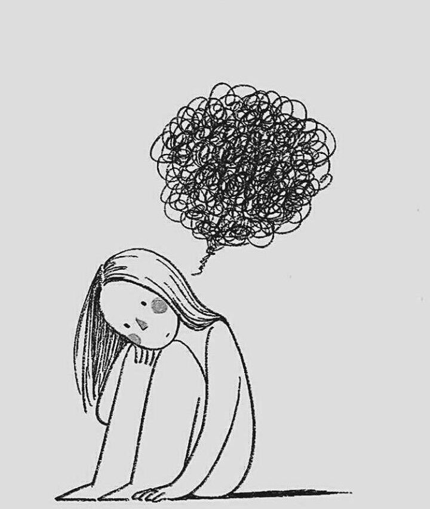

La salud mental es fundamental para el bienestar de los jóvenes, ya que influye en la forma en que piensan, sienten y actúan en su vida diaria.
Actualmente muchos adolescentes enfrentan situaciones difíciles como estrés escolar, problemas familiares, presión social y preocupaciones personales que pueden afectar sus emociones.
Mantener una buena salud emocional ayuda a mejorar la autoestima, la convivencia con otras personas y el rendimiento escolar.
Hablar sobre los sentimientos, realizar actividades recreativas, practicar deportes y convivir con amigos o familiares son formas positivas de cuidar la salud mental.
La ansiedad es uno de los problemas de salud mental más comunes en los estudiantes. Se caracteriza por una preocupación excesiva, miedo o nerviosismo constante ante diferentes situaciones, especialmente relacionadas con la escuela. Muchos estudiantes sienten presión por obtener buenas calificaciones, cumplir con tareas, presentar exámenes o satisfacer las expectativas de sus padres y maestros. Cuando la ansiedad es muy intensa, puede afectar tanto la salud emocional como física.
Algunos jóvenes sienten ansiedad por los exámenes, tareas escolares, problemas familiares, relaciones sociales o por el miedo al fracaso.
LA ANSIEDAD PUEDE PROVOCAR:
Dificultad para concentrarse y aprender en clases.
Nerviosismo antes de exámenes, exposiciones o actividades escolares.
Problemas para dormir o descansar adecuadamente.
Cansancio constante y falta de energía.
Miedo a equivocarse o a ser juzgado por otras personas.
Dolores de cabeza, sudoración o aceleración del corazón.
Dificultad para convivir o participar en actividades sociales.
Cuando un estudiante vive con ansiedad por mucho tiempo, puede sentirse agotado emocionalmente y perder confianza en sí mismo.
PARA CONTROLAR LA ANSIEDAD ES RECOMENDABLE:
Practicar deportes o ejercicio
Escuchar música relajante
Hablar con personas de confianza
Dormir adecuadamente
Organizar el tiempo y las actividades

La depresión es un trastorno que afecta el estado de ánimo y la forma en que una persona piensa y siente. No se trata solamente de tristeza pasajera, sino de un sentimiento profundo y constante que puede durar mucho tiempo. En los estudiantes, la depresión puede afectar el rendimiento escolar, las relaciones sociales y la motivación para realizar actividades diarias.
Muchas veces los jóvenes pueden sentirse solos, incomprendidos o sin motivación debido a problemas personales o emocionales.
LA DEPRESIÓN PUEDE PROVOCAR
Tristeza profunda o sensación de vacío.
Falta de motivación para estudiar o asistir a clases.
Bajo rendimiento académico.
Pérdida de interés en actividades que antes disfrutaban.
Aislamiento social y dificultad para convivir.
Baja autoestima y pensamientos negativos sobre sí mismos.
Cambios en el apetito y en los hábitos de sueño.
Sensación de cansancio o falta de energía la mayor parte del tiempo.
Muchos estudiantes con depresión sienten que nadie los comprende, lo que puede hacer más difícil pedir ayuda.
EXPERIENCIAS PERSONALES
Las experiencias que viven los estudiantes tienen una gran influencia en su salud mental. Situaciones difíciles o dolorosas pueden generar estrés, tristeza y preocupación. Cada persona reacciona de manera diferente, pero algunas experiencias pueden afectar profundamente las emociones y el comportamiento.
Entre las experiencias que más afectan se encuentran:
Problemas familiares o discusiones constantes en casa.
Bullying o acoso escolar.
Rechazo social o dificultades para hacer amigos.
Presión académica y exceso de tareas.
Problemas económicos en la familia.
Pérdida de un ser querido.
Violencia o maltrato.
Comparaciones en redes sociales que generan inseguridad.
Estas experiencias pueden hacer que los estudiantes se sientan solos, inseguros o poco valorados, afectando su bienestar emocional y su desempeño escolar.
Convivir con amigos y familia
Realizar hobbies o actividades favoritas
Practicar ejercicio físico
Expresar las emociones
Buscar ayuda profesional si es necesario
La agresividad es una conducta que puede aparecer cuando una persona tiene dificultades para controlar sus emociones, especialmente el enojo, el estrés o la frustración. En los estudiantes, la agresividad puede relacionarse con problemas de salud mental, presión escolar, problemas familiares o experiencias negativas que afectan su bienestar emocional.
La agresividad puede provocar:
Problemas de convivencia con compañeros y maestros.
Conflictos escolares y familiares.
Bajo rendimiento académico.
Dificultad para controlar emociones.
Aislamiento social o rechazo de otras personas.
Estrés y tensión constante.
Problemas de disciplina dentro de la escuela.
Línea de la Vida Teléfono: 800 911 2000 Atención gratuita y confidencial las 24 horas para ansiedad, depresión y crisis emocionales.
SAPTEL – Apoyo psicológico Teléfono: 55 5259 8121 Atención psicológica y orientación emocional.
Terapify +1 Atención Psicológica UNAM Teléfono: 55 5025 0855 Orientación y apoyo psicológico a distancia.
Recibir apoyo ayuda a enfrentar mejor los problemas y mejorar el bienestar emocional.